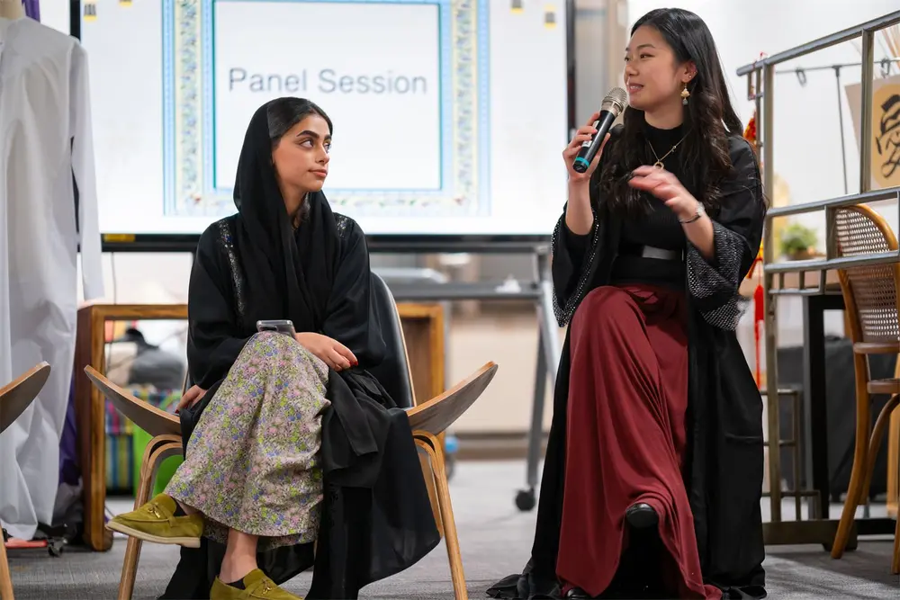
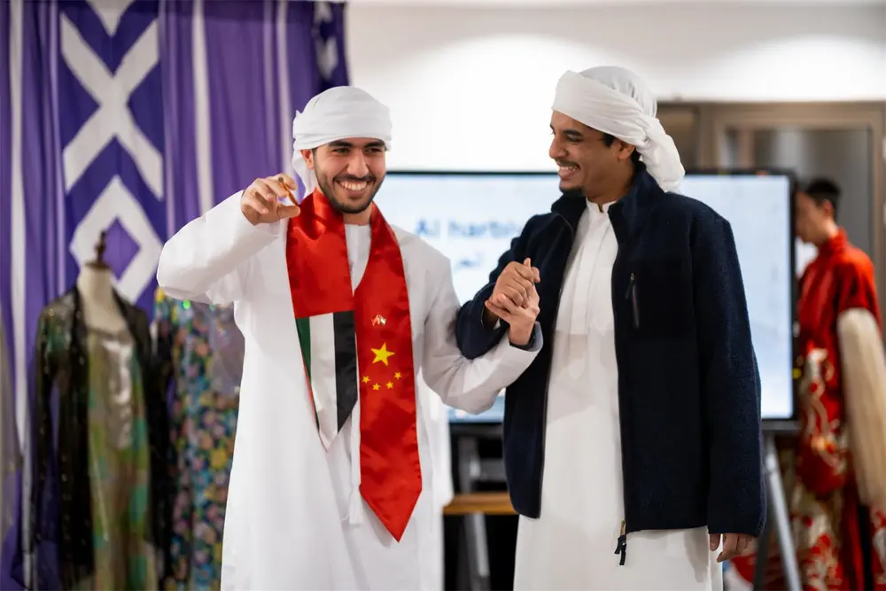
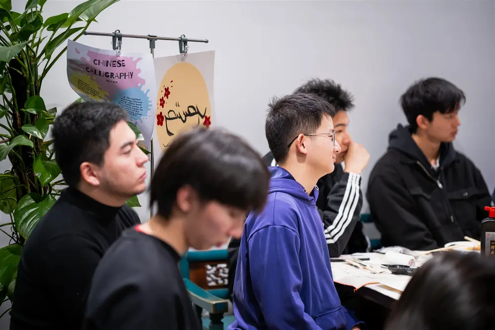
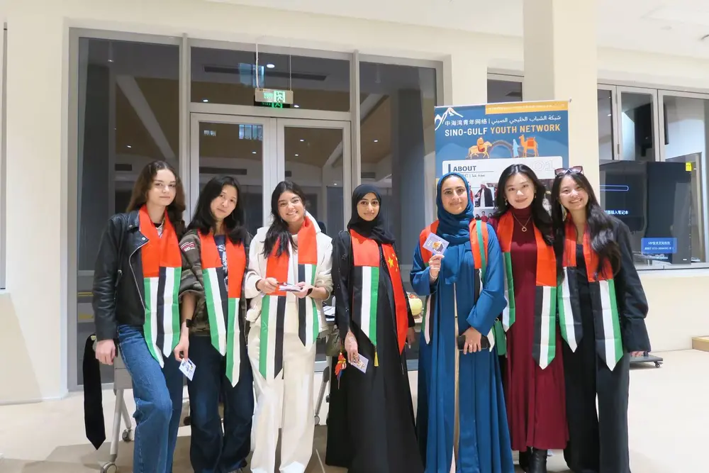
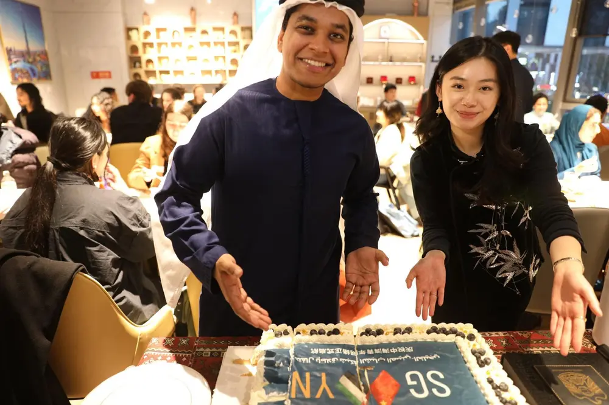
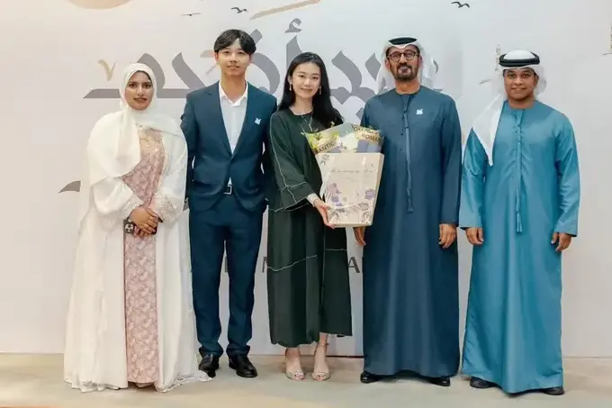
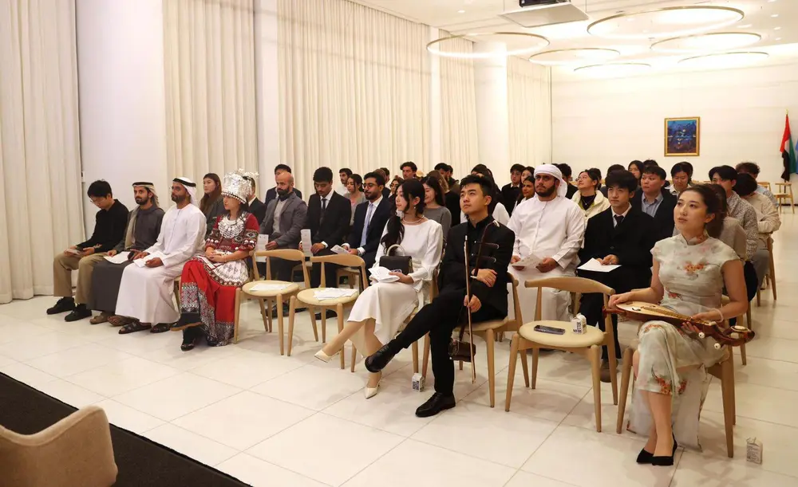
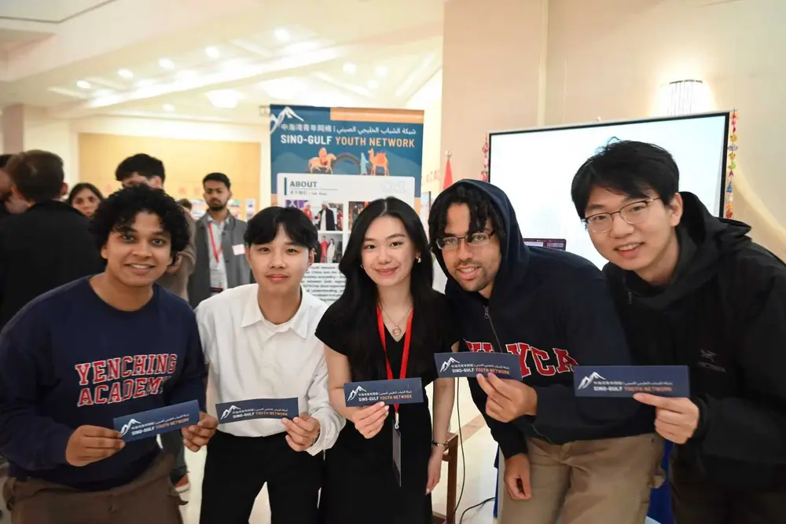
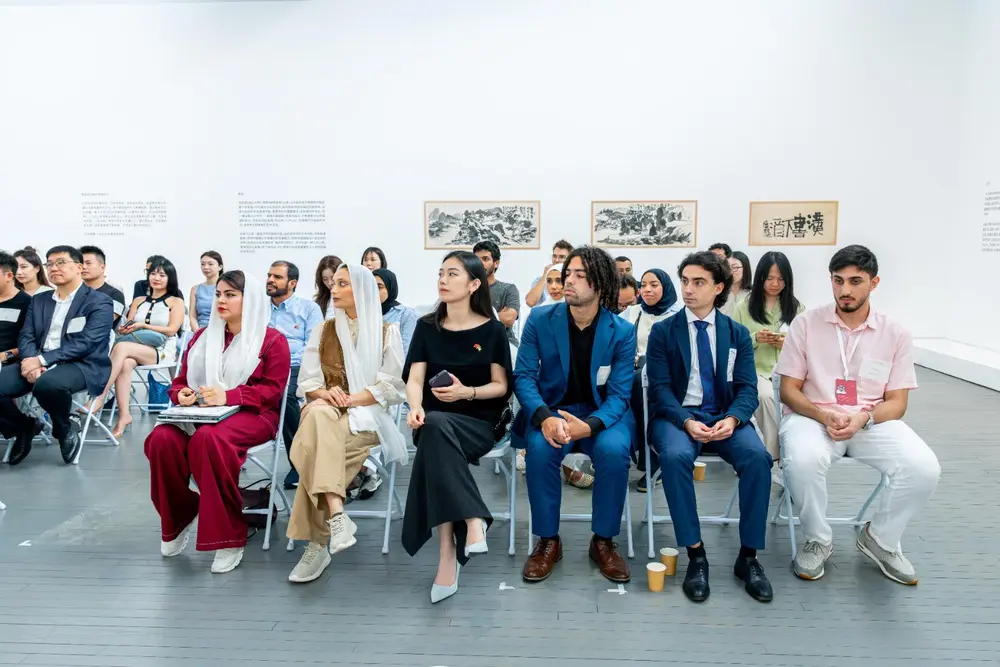
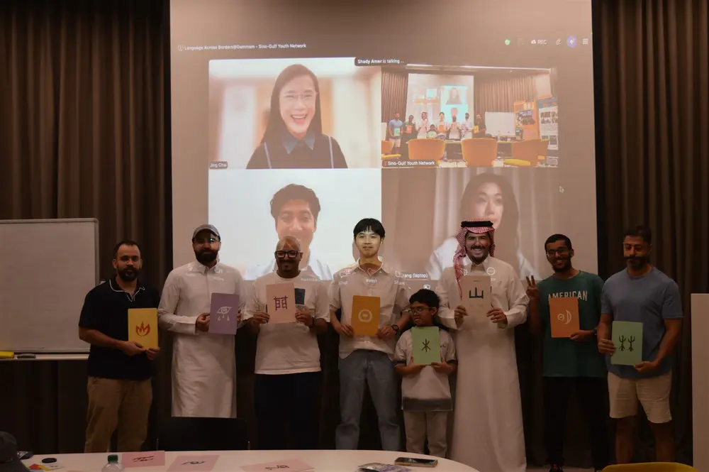

How it started
SGYN began with a simple observation: as China and the Gulf grow closer, young people on both sides still have too few opportunities to understand and engage with one another beyond headlines and high-level diplomacy. Founded by Gloria Tsang in December 2024, SGYN creates these people-to-people connections through intimate conversations, language exchanges, cultural gatherings, policy dialogues, and career opportunities.









The network today
While young people always remain at the heart of our mission and at the helm of operations, SGYN welcomes everyone committed to advancing mutual understanding between China and the Gulf. Our intergenerational network brings together students and young professionals with established academics, practitioners, diplomats, and partner institutions across language and translation, policy, finance, technology, engineering, medicine, and the arts. Within this wider community, SGYN’s youth network includes more than 100 members worldwide. We engage in person across more than eight cities—from Shanghai and Beijing to Jeddah, Abu Dhabi, and New York—with activities conducted in Chinese, Arabic, and English.
LAB reached its eighth city — two days at the Peranakan Museum with Arab Network @ Singapore.

Chinese and Arabic learners at Ithra Library — games, storytelling, and an open mic.
Our inaugural policy and economics forum at Peking University — four speakers across the New Silk Road.
Founded and led by Abdulla AlHemeiri
A holistic research centre stretching from weekly news updates, analysis, and policy reports to a dedicated youth publications section, highlighting SGYN's youth perspective. SGI aims to become a leading intellectual platform for China–Gulf dialogue.
Visit the Sino-Gulf Institute →
The first issue, published September 2026 in collaboration with SGYN: 88 pages and ten contributions — seven in English, three in Chinese — on energy, diplomacy, trade, finance, tourism, and technology, written by young researchers across countries, universities, and disciplines.
Read the first issue →A film by Mariam Al Mutawa — the first voice in the Media Studio. Walking through a Shanghai park, she is pulled into a circle of locals dancing and practicing kung fu.
Watch the film2 min 45 s — with sound
Visit the Media Studio
My goal was simple: that young people in China and the Gulf would no longer have to learn about each other only through headlines.
I’ve watched members teach each other phrases, debate ideas, share stages, travel across cities, and open doors for one another around the world. That, more than anything, has been the greatest reward of this work — watching SGYN become what I hoped it could be.
Gloria Tsang
Founder & Executive Director
China and the Gulf — and, more broadly, the Middle East — have been interconnected for far longer, and in far more ways, than modern conversations about trade or conflict tend to suggest.
I know this as an academic, through my research on regional geopolitics, Sino-Muslim history, and the exchanges that have connected China and the Arab world for centuries. I experience it as a young professional, having worked across industries in the UAE and Saudi Arabia. And most importantly, I live it as a young person whose friendships, work, and life have long stretched across both spaces.
Of those three perspectives, the last has taught me the most about what actually sustains people-to-people ties.
I kept meeting young people genuinely curious about the other side, even when that curiosity came with assumptions shaped by geographic distance, media headlines, and limited exposure. Yet this was precisely where I saw the fewest opportunities. For the generation that will eventually build and inherit the future of Sino-Gulf relations, meaningful engagement too often came through formal channels, rather than collective spaces we had built ourselves and had real agency over.
So I started SGYN.
Everything here is built by young leaders who care enough to make it happen.
My goal was simple: that young people in China and the Gulf would no longer have to learn about each other only through headlines. I wanted us to have a community where young people could engage with China–Gulf relations outside the usual formalities: not only across conference tables or through institutions, but over meals, through language, in honest conversations, and eventually through friendships and opportunities that continue long after an event ends.
Since then, I’ve watched members teach each other phrases, debate ideas, share stages, travel across cities, and open doors for one another around the world. That, more than anything, has been the greatest reward of this work — watching SGYN become what I hoped it could be.
This network belongs to all the young people who have a stake in what the Sino-Gulf relationship becomes next.
Founder & Executive Director, Sino-Gulf Youth Network
Students & young professionals — events, community, and friends in 8 cities. Free to join, always.
Become a member →Mentorship and real-world opportunities for a China–Gulf career.
Apply →Universities, missions, companies, funds, think tanks, media.
Work with us →Visibility and community access, from salons to the flagship dialogue.
Support →SGYN's operations are entirely self-funded by our leadership team, and all our events and resources are free for our youth community. If you'd like to contribute to our initiative, you can "buy us a coffee" here.
buymeacoffee.com →Get event invites, program updates, and community highlights — delivered monthly to your inbox.